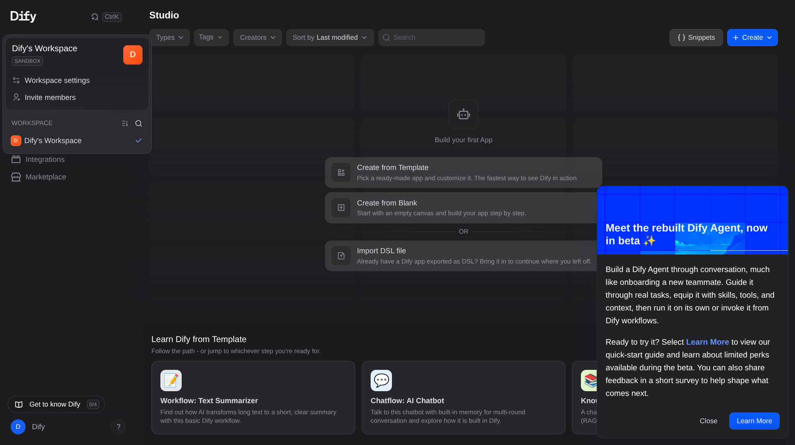
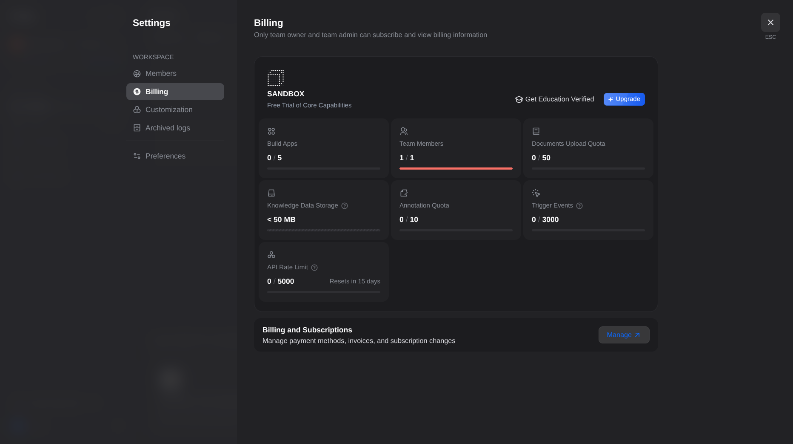
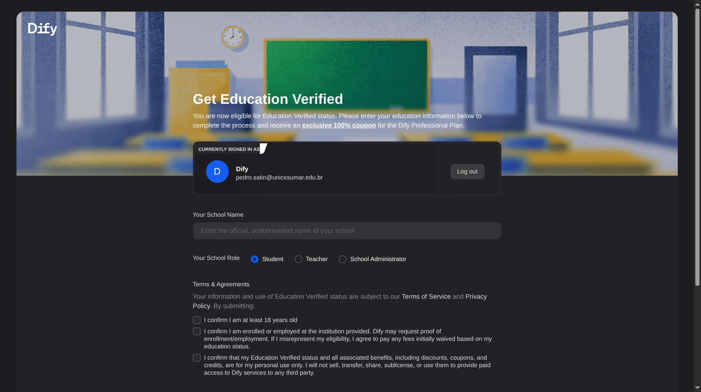

O que a verificação muda
A verificação libera o plano Professional do Dify por um ano, sem custo. Os créditos de modelo continuam os mesmos do plano gratuito: 200 no total, sem renovação mensal.
| Item | Sandbox, gratuito | Education |
|---|---|---|
| Créditos de modelo | 200, uma vez | 200, uma vez |
| Apps no workspace | 5 | Limite do plano Professional |
| Membros no workspace | 1 | Limite do plano Professional |
| Duração | Sem prazo | Um ano, com nova verificação anual |
Na A8, cada chamada ao gpt-4o-mini consumiu 1 crédito. Uma execução completa do workflow faz 3 chamadas, e uma execução que para com dúvidas faz 1.
Passo a passo
1. Conta com o e-mail institucional
A verificação lê o e-mail da conta do Dify. E-mail pessoal (Gmail, Outlook) não é aceito. Entre em cloud.dify.ai com o e-mail da UniCesumar. Se a sua conta foi criada com outro e-mail, crie uma conta nova com o institucional.
2. Abrir as configurações do workspace
No canto superior esquerdo, clique no nome do workspace (marcado SANDBOX) e depois em Workspace settings.

3. Billing e Get Education Verified
No menu lateral das configurações, abra Billing e clique em Get Education Verified, ao lado do botão Upgrade.

4. Preencher o formulário
O Dify confere o domínio do e-mail antes de abrir o formulário. Com o domínio aceito, a página mostra "You are now eligible for Education Verified status".
- Your School Name: nome oficial e por extenso da instituição, sem sigla.
- Your School Role:
Student. - Terms & Agreements: as três declarações dizem que você tem 18 anos ou mais, que está matriculado na instituição e que o benefício é de uso pessoal. Marque se forem verdadeiras e clique em Submit.
Segundo a documentação do Dify, o resultado aparece na hora e o Dify pode pedir comprovante de matrícula.

5. Aplicar o desconto ao workspace
Depois da aprovação, volte a Billing e clique em Use education discount. O Dify abre o checkout do plano Professional anual com cupom de 100%, e o valor final fica zero. Conclua o checkout para ativar o plano no workspace.
Problemas comuns
| Situação | O que fazer |
|---|---|
| A página diz que o e-mail não é elegível | Confira se a conta usa o e-mail institucional. O domínio unicesumar.edu.br passou na checagem automática. O domínio dos e-mails de aluno pode ser outro e não foi testado. Se for recusado, siga no plano Sandbox, que atende à atividade. |
| Pedido negado | O Dify recebe recurso pelo e-mail support@dify.ai, com o nome completo da instituição em inglês e o domínio do e-mail. |
| Créditos acabaram | A verificação não repõe créditos. Use a reserva da página da atividade. |
| Troca de e-mail da conta | O Dify pode revogar a verificação, e o e-mail novo não herda o status. |
Fontes
- Dify for Education: elegibilidade e créditos.
- Subscription management: passos de verificação, desconto e verificação anual.
Telas capturadas no Dify Cloud em 15/10/2026.